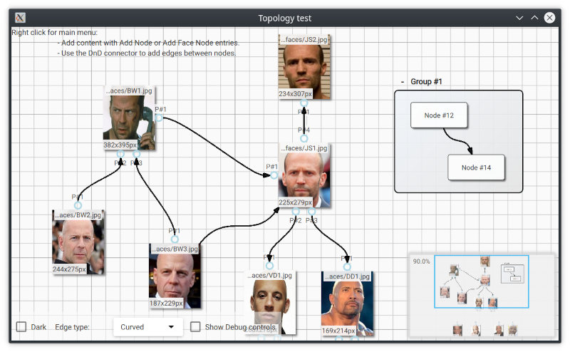

QuickQanava

 (Linux/g++6/Qt5.12.1 - OSX/Clang/Qt5.12.1)
(Linux/g++6/Qt5.12.1 - OSX/Clang/Qt5.12.1)
(Windows MSVC 2015 x64/Qt5.10.1)


QuickQanava is alpha, interface may change before 1.0.0 release, but QuickQanava is already used extensively in production code.
QuickQanava is licensed under BSD-3, specific features or support is available on demand: benoit@destrat.io
Introduction¶
QuickQanava is a C++14 library designed to display graphs and relational content in a QtQuick application. QuickQanava provide QML components and C++ classes to visualize medium-sized directed graphs in a C++/QML application. QuickQanava does not provide advanced layout algorithms, but rather focus on displaying relational content in advanced dynamic user interfaces (with DnD support, resizable content, visual connection of nodes).
QuickQanava main repository is hosted on GitHub: https://github.com/cneben/quickqanava
QuickQanava is primarily developed with Qt >= 5.13 with MSVC2015 and g++7. minimal required Qt version is Qt 5.10.
- Project homepage: http://cneben.github.io/QuickQanava/index.html
Please refer to Installation manual and Graph, Nodes and Graph sections for more information about installing and using QuickQanava.
Gallery¶
| Node Grouping | Visual Connection of Nodes |
|---|---|
 |
 |
 |
 |

Roadmap¶
- v0.15.x:
- Add full support for groups inside group (ie subgraphs).
- Update geometry creation interface and delegate management.
- v0.16.x:
- Add support for direct visual dragging of port items.
- Fix current qan::PointGrid bugs and add "snap to grid" support.
- v0.17.x:
- Rewrite CMake configuration, add install step, use QML plugins.
- v1.: Advanced edge visualization
- Add better support for graph fine grained locking strategies.
- Add simple layout algorithms (force directed, tree).
- Publish the 4k sample (40k is probably too much for QML without dedicated culling and LOD code).